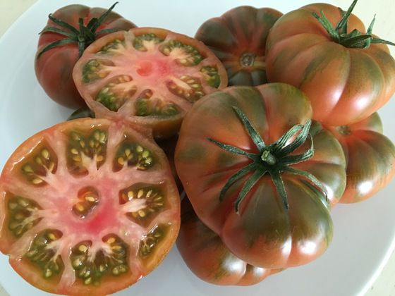

Por debajo de 15 ºC, se presentan problemas de crecimiento y polinización. Por encima de 35 ºC, se reduce la polinización y calidad del polen.la temperatura debe mantenerse entre los 21 y los 27 grados durante el día y entre los 16 y los 18 durante la noche. Por otro lado, además de la temperatura también es importante que controles la humedad: manteniéndola siempre por debajo del 90%.
¿Cuál es el tomate de invierno?
Se trata de una variedad nueva cuya singularidad es, sobre todo, su extraordinario sabor tradicional en cultivos de invierno. Monterosa consigue recuperar el gusto del tomate mediterráneo tradicional, no sólo en verano, sino también en los cultivos de diciembre a junio.
